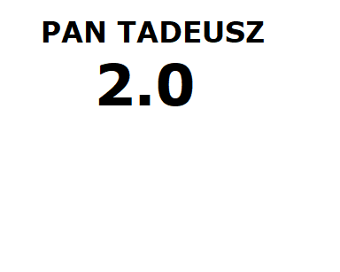

|  |
|
|
Znany przemyski pisarz Jan Kowalski postanowił napisać epopeję na miarę Polski roku 2001 Nawiązując do Adama Mickiewicza, Jan Kowalski brutalnie rozprawia się z mitami narodowymi Krakowski krytyk Wacław Wieczko napisał - "Grafomania, grafomania i wynurzenia. Zupełnie niezrozumiały w tym przypadku motyw wieloryba, który jest dla samego bycia. Nie polecam, 2/10" Adam Mickiewicz nie ustosunkował się jeszcze |
|